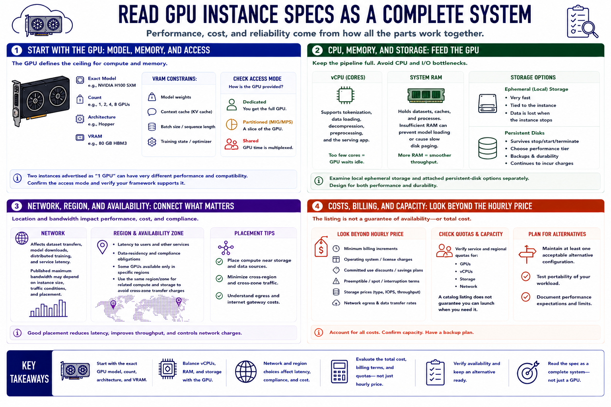

GPU Instance Basics
Connecting to LMS... Progress: in progress

Narration
Read a GPU instance specification as a complete system. Start with the exact accelerator model, count, architecture, and VRAM. VRAM constrains model weights, context cache, batch size, and training state. Two instances advertised as one GPU can deliver very different performance and software compatibility. Confirm whether the device is dedicated, partitioned, or shared and whether the intended framework supports it.
Virtual CPU and system RAM support tokenization, data loading, decompression, preprocessing, and the serving application. Too few CPU cores can leave an expensive GPU waiting. Insufficient RAM can prevent model loading or force slow disk use. Examine local ephemeral storage and attached persistent-disk options separately. Ephemeral disks may be fast but disappear with the instance, while persistent disks survive and continue generating charges.
Network specifications influence dataset movement, model downloads, distributed work, and service response. Published maximum bandwidth may depend on instance size or traffic conditions. Region and availability zone affect latency to users and other services, data-residency obligations, and whether a desired GPU can be provisioned. Place related compute and storage deliberately to avoid unnecessary transfer or cross-zone charges.
Hourly price is only the visible starting point. Check minimum billing increments, operating-system charges, discounts, interruption terms, and storage and network rates. Before building automation around an instance type, verify account quotas and actual capacity. A catalog listing does not guarantee that the GPU is available in the required region at the required time. Maintain at least one acceptable alternative configuration for important work.